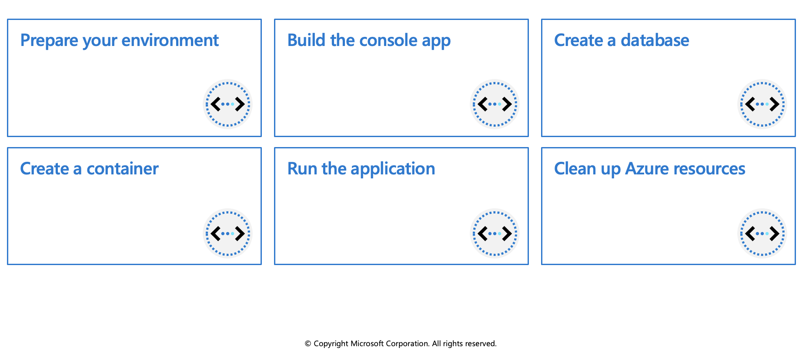

Work with Azure Cosmos DB
This module is an introduction to both client and server-side programming on Azure Cosmos DB.
Microsoft .NET SDK v3 for Azure Cosmos DB
This unit focuses on Azure Cosmos DB .NET SDK v3 for API for NoSQL. (Microsoft.Azure.Cosmos NuGet package.) If you're familiar with the previous version of the .NET SDK, you may be used to the terms collection and document.
The azure-cosmos-dotnet-v3 GitHub repository includes the latest .NET sample solutions. You use these solutions to perform CRUD (create, read, update, and delete) and other common operations on Azure Cosmos DB resources.
Because Azure Cosmos DB supports multiple API models, version 3 of the .NET SDK uses the generic terms "container" and "item". A container can be a collection, graph, or table. An item can be a document, edge/vertex, or row, and is the content inside a container.
Below are examples showing some of the key operations you should be familiar with. For more examples please visit the GitHub link above. The examples below all use the async version of the methods.
CosmosClient
Creates a new CosmosClient with a connection string. CosmosClient is thread-safe. Its recommended to maintain a single instance of CosmosClient per lifetime of the application which enables efficient connection management and performance.
CosmosClient client = new CosmosClient(endpoint, key);
Database examples
Create a database
The CosmosClient.CreateDatabaseIfNotExistsAsync checks if a database exists, and if it doesn't, creates it. Only the database id is used to verify if there is an existing database.
// An object containing relevant information about the response
DatabaseResponse databaseResponse = await client.CreateDatabaseIfNotExistsAsync(databaseId, 10000);
Read a database by ID
Reads a database from the Azure Cosmos DB service as an asynchronous operation.
DatabaseResponse readResponse = await database.ReadAsync();
Delete a database
Delete a Database as an asynchronous operation.
await database.DeleteAsync();
Container examples
Create a container
The Database.CreateContainerIfNotExistsAsync method checks if a container exists, and if it doesn't, it creates it. Only the container id is used to verify if there is an existing container.
// Set throughput to the minimum value of 400 RU/s
ContainerResponse simpleContainer = await database.CreateContainerIfNotExistsAsync(
id: containerId,
partitionKeyPath: partitionKey,
throughput: 400);
Get a container by ID
Container container = database.GetContainer(containerId);
ContainerProperties containerProperties = await container.ReadContainerAsync();
Delete a container
Delete a Container as an asynchronous operation.
await database.GetContainer(containerId).DeleteContainerAsync();
Item examples
Create an item
Use the Container.CreateItemAsync method to create an item. The method requires a JSON serializable object that must contain an id property, and a partitionKey.
ItemResponse<SalesOrder> response = await container.CreateItemAsync(salesOrder, new PartitionKey(salesOrder.AccountNumber));
Read an item
Use the Container.ReadItemAsync method to read an item. The method requires type to serialize the item to along with an id property, and a partitionKey.
string id = "[id]";
string accountNumber = "[partition-key]";
ItemResponse<SalesOrder> response = await container.ReadItemAsync(id, new PartitionKey(accountNumber));
Query an item
The Container.GetItemQueryIterator method creates a query for items under a container in an Azure Cosmos database using a SQL statement with parameterized values. It returns a FeedIterator.
QueryDefinition query = new QueryDefinition(
"select * from sales s where s.AccountNumber = @AccountInput ")
.WithParameter("@AccountInput", "Account1");
FeedIterator<SalesOrder> resultSet = container.GetItemQueryIterator<SalesOrder>(
query,
requestOptions: new QueryRequestOptions()
{
PartitionKey = new PartitionKey("Account1"),
MaxItemCount = 1
});
Exercise: Create resources by using the Microsoft .NET SDK v3

In this exercise you'll create a console app to perform the following operations in Azure Cosmos DB:
- Connect to an Azure Cosmos DB account
- Create a database
- Create a container
Prerequisites
- Azure Account
- Visual Studio Code on one of the supported platforms.
- .NET 6 is the target framework for the steps below.
- The C# extension** for Visual Studio Code.
Connecting to Azure
Start Visual Studio Code and open a terminal window by selecting Terminal from the top application bar, then choosing New Terminal.
Log in to Azure by using the command below. A browser window should open letting you choose which account to log in with.
az login
Create resources in Azure
Create a resource group for the resources needed for this exercise.
az group create --location eastus --name az204-cosmos-rgCreate the Azure Cosmos DB account. Replace
<myCosmosDBacct>with a unique name to identify your Azure Cosmos DB account. The name can only contain lowercase letters, numbers, and the hyphen (-) character. It must be between 3-31 characters in length. This command will take a few minutes to complete.az cosmosdb create --name <myCosmosDBacct> --resource-group az204-cosmos-rgRecord the
documentEndpointshown in the JSON response, it will be used below.Retrieve the primary key for the account by using the command below. Record the primaryMasterKey from the command results it will be used in the code below.
# Retrieve the primary key az cosmosdb keys list --name <myCosmosDBacct> --resource-group az204-cosmos-rg
Set up the console application
Now that the needed resources are deployed to Azure the next step is to set up the console application using the same terminal window in Visual Studio Code.
Create a folder for the project and change in to the folder.
md az204-cosmos cd az204-cosmosCreate the .NET console app.
dotnet new consoleOpen the current folder in VS Code using the command below. The -r option will open the folder without launching a new VS Code window.
code . -rSelect the Program.cs file in the Explorer pane to open the file in the editor.
Build the console app
It's time to start adding the packages and code to the project.
Add packages and using statements
Open the terminal in VS Code and use the command below to add the
Microsoft.Azure.Cosmospackage to the project.dotnet add package Microsoft.Azure.Cosmos
Add code to connect to an Azure Cosmos DB account
Add the code snippet below after the
usingstatement. The code snippet adds constants and variables into the class and adds some error checking. Be sure to replace the placeholder values for EndpointUri and PrimaryKey following the directions in the code comments.dotnet add package Microsoft.Azure.CosmosDelete any existing code in the Program.cs file and add the using Microsoft.Azure statement.
using Microsoft.Azure.Cosmos;
Add code to connect to an Azure Cosmos DB account
Add the code snippet below after the
usingstatement. The code snippet adds constants and variables into the class and adds some error checking. Be sure to replace the placeholder values forEndpointUriand `PrimaryKey following the directions in the code comments.public class Program { // Replace <documentEndpoint> with the information created earlier private static readonly string EndpointUri = "<documentEndpoint>"; // Set variable to the Primary Key from earlier. private static readonly string PrimaryKey = "<your primary key>"; // The Cosmos client instance private CosmosClient cosmosClient; // The database we will create private Database database; // The container we will create. private Container container; // The names of the database and container we will create private string databaseId = "az204Database"; private string containerId = "az204Container"; public static async Task Main(string[] args) { try { Console.WriteLine("Beginning operations...\n"); Program p = new Program(); await p.CosmosAsync(); } catch (CosmosException de) { Exception baseException = de.GetBaseException(); Console.WriteLine("{0} error occurred: {1}", de.StatusCode, de); } catch (Exception e) { Console.WriteLine("Error: {0}", e); } finally { Console.WriteLine("End of program, press any key to exit."); Console.ReadKey(); } } //The sample code below gets added below this line }Below the
Mainmethod, add a new asynchronous task calledCosmosAsync, which instantiates our newCosmosClientand adds code to call the methods you'll add later to create a database and a container.public async Task CosmosAsync() { // Create a new instance of the Cosmos Client this.cosmosClient = new CosmosClient(EndpointUri, PrimaryKey); // Runs the CreateDatabaseAsync method await this.CreateDatabaseAsync(); // Run the CreateContainerAsync method await this.CreateContainerAsync(); }
Create a database
Copy and paste the CreateContainerAsync method below the CreateDatabaseAsync method.
private async Task CreateContainerAsync()
{
// Create a new container
this.container = await this.database.CreateContainerIfNotExistsAsync(containerId, "/LastName");
Console.WriteLine("Created Container: {0}\n", this.container.Id);
}
Run the application
Save your work and, in a terminal in VS Code, run the
dotnet runcommand. The console will display the following messages.Beginning operations... Created Database: az204Database Created Container: az204Container End of program, press any key to exit.Verify the results by opening the Azure portal, navigating to your Azure Cosmos DB resource, and use the Data Explorer to view the database and container.
Clean up Azure resources
You can now safely delete the az204-cosmos-rg resource group from your account by running the command below.
az group delete --name az204-cosmos-rg --no-wait
Create stored procedures
Azure Cosmos DB provides language-integrated, transactional execution of JavaScript that lets you write stored procedures, triggers, and user-defined functions (UDFs). To call a stored procedure, trigger, or user-defined function, you need to register it. For more information, see How to work with stored procedures, triggers, user-defined functions in Azure Cosmos DB.
Writing stored procedures
Stored procedures can create, update, read, query, and delete items inside an Azure Cosmos container. Stored procedures are registered per collection, and can operate on any document or an attachment present in that collection.
Here's a simple stored procedure that returns a "Hello World" response.
var helloWorldStoredProc = {
id: "helloWorld",
serverScript: function () {
var context = getContext();
var response = context.getResponse();
response.setBody("Hello, World");
}
}
The context object provides access to all operations that can be performed in Azure Cosmos DB, and access to the request and response objects. In this case, you use the response object to set the body of the response to be sent back to the client.
Create an item using stored procedure
When you create an item by using stored procedure it's inserted into the Azure Cosmos container and an ID for the newly created item is returned. Creating an item is an asynchronous operation and depends on the JavaScript callback functions. The callback function has two parameters:
- The error object in case the operation fails
- A return value
Inside the callback, you can either handle the exception or throw an error. In case a callback isn't provided and there's an error, the Azure Cosmos DB runtime will throw an error.
The stored procedure also includes a parameter to set the description, it's a boolean value. When the parameter is set to true and the description is missing, the stored procedure will throw an exception. Otherwise, the rest of the stored procedure continues to run.
This stored procedure takes as input documentToCreate, the body of a document to be created in the current collection. All such operations are asynchronous and depend on JavaScript function callbacks. The callback function has two parameters, one for the error object in case the operation fails, and one for the created object. Inside the callback, users can either handle the exception or throw an error. In case a callback isn't provided and there's an error, the DocumentDB runtime throws an error.
var createDocumentStoredProc = {
id: "createMyDocument",
body: function createMyDocument(documentToCreate) {
var context = getContext();
var collection = context.getCollection();
var accepted = collection.createDocument(collection.getSelfLink(),
documentToCreate,
function (err, documentCreated) {
if (err) throw new Error('Error' + err.message);
context.getResponse().setBody(documentCreated.id)
});
if (!accepted) return;
}
}
Arrays as input parameters for stored procedures
When defining a stored procedure in the Azure portal, input parameters are always sent as a string to the stored procedure. Even if you pass an array of strings as an input, the array is converted to string and sent to the stored procedure. To work around this, you can define a function within your stored procedure to parse the string as an array. The following code shows how to parse a string input parameter as an array:
function sample(arr) {
if (typeof arr === "string") arr = JSON.parse(arr);
arr.forEach(function(a) {
// do something here
console.log(a);
});
}
Bounded execution
All Azure Cosmos DB operations must complete within a limited amount of time. Stored procedures have a limited amount of time to run on the server. All collection functions return a Boolean value that represents whether that operation will complete or not
Transactions within stored procedures
You can implement transactions on items within a container by using a stored procedure. JavaScript functions can implement a continuation-based model to batch or resume execution. The continuation value can be any value of your choice and your applications can then use this value to resume a transaction from a new starting point. The diagram below depicts how the transaction continuation model can be used to repeat a server-side function until the function finishes its entire processing workload.

Create triggers and user-defined functions
Azure Cosmos DB supports pre-triggers and post-triggers. Pre-triggers are executed before modifying a database item and post-triggers are executed after modifying a database item. Triggers are not automatically executed, they must be specified for each database operation where you want them to execute. After you define a trigger, you should register it by using the Azure Cosmos DB SDKs.
Pre-triggers
The following example shows how a pre-trigger is used to validate the properties of an Azure Cosmos item that is being created, it adds a timestamp property to a newly added item if it doesn't contain one.
function validateToDoItemTimestamp() {
var context = getContext();
var request = context.getRequest();
// item to be created in the current operation
var itemToCreate = request.getBody();
// validate properties
if (!("timestamp" in itemToCreate)) {
var ts = new Date();
itemToCreate["timestamp"] = ts.getTime();
}
// update the item that will be created
request.setBody(itemToCreate);
}
Pre-triggers cannot have any input parameters. The request object in the trigger is used to manipulate the request message associated with the operation. In the previous example, the pre-trigger is run when creating an Azure Cosmos item, and the request message body contains the item to be created in JSON format.
When triggers are registered, you can specify the operations that it can run with. This trigger should be created with a TriggerOperation value of TriggerOperation.Create, which means using the trigger in a replace operation is not permitted.
Post-triggers
The following example shows a post-trigger. This trigger queries for the metadata item and updates it with details about the newly created item.
function updateMetadata() {
var context = getContext();
var container = context.getCollection();
var response = context.getResponse();
// item that was created
var createdItem = response.getBody();
// query for metadata document
var filterQuery = 'SELECT * FROM root r WHERE r.id = "_metadata"';
var accept = container.queryDocuments(container.getSelfLink(), filterQuery,
updateMetadataCallback);
if(!accept) throw "Unable to update metadata, abort";
function updateMetadataCallback(err, items, responseOptions) {
if(err) throw new Error("Error" + err.message);
if(items.length != 1) throw 'Unable to find metadata document';
var metadataItem = items[0];
// update metadata
metadataItem.createdItems += 1;
metadataItem.createdNames += " " + createdItem.id;
var accept = container.replaceDocument(metadataItem._self,
metadataItem, function(err, itemReplaced) {
if(err) throw "Unable to update metadata, abort";
});
if(!accept) throw "Unable to update metadata, abort";
return;
}
}
One thing that is important to note is the transactional execution of triggers in Azure Cosmos DB. The post-trigger runs as part of the same transaction for the underlying item itself. An exception during the post-trigger execution will fail the whole transaction. Anything committed will be rolled back and an exception returned.
User-defined functions
The following sample creates a UDF to calculate income tax for various income brackets. This user-defined function would then be used inside a query. For the purposes of this example assume there is a container called "Incomes" with properties as follows:
{
"name": "User One",
"country": "USA",
"income": 70000
}
The following is a function definition to calculate income tax for various income brackets:
function tax(income) {
if(income == undefined)
throw 'no input';
if (income < 1000)
return income * 0.1;
else if (income < 10000)
return income * 0.2;
else
return income * 0.4;
}